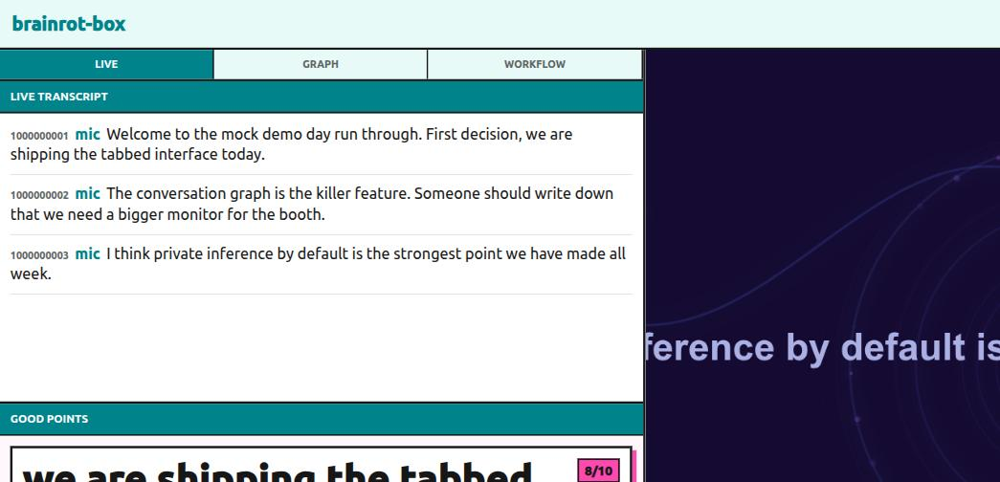

It listens to the room and paints it. A judge reads the transcript and when
somebody lands a banger, the canvas flashes the quote and writes it in a ledger.
The meeting gets a score now.
▶ open the boxworks on any laptop · 🎤 mic or a live Otter feed · nothing to install
why it exists
0:00
Mid-demo. It's landing — eye contact, nods.
0:04
The architecture slide. Boxes, arrows.
0:11
The room goes quiet. Someone opens Slack.
0:12
The box paints the room's own words in neon. Eyes come back.
For presenters who can feel a room drifting, and organizers who'd rather not be
the one cutting people off. It is also, technically, a coping mechanism.

live: the transcript lands on the left, the judge flags an 8/10, the canvas takes the quote
live
The transcript as it happens, and the bangers ledger — every scored good point, quote and reason.
graph
The conversation as a topic timeline: frames open as subjects shift, returns marked, decisions and action items on their own rail.
studio
Watch one model write animation tools live — code streaming — while a faster one stacks and tunes them to match the room.
the two models
One box that paints the room while little detectors read it.
the canvas · paints
toolsmith × compositor
two models in TEE enclaves · NEAR + Chutes
toolsmith writes little animation tools, live
compositor VJs them, 2–5 layers a frame
e2ee prompts decrypt only inside the enclave
the detectors · read
judge · decoder · distill
every few seconds, over the same transcript
judge scores the last minute: quote · why · 0–10
decoder types the talk into the topic timeline
distill turns the mood into a visual brief
speech via your 🎤 or a scoped, revocable Otter read token — no raw mic upload, no copied cookies